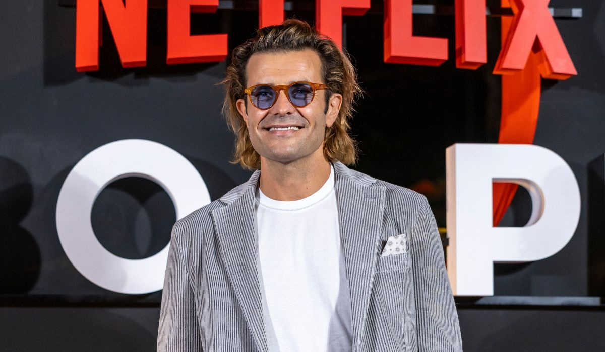
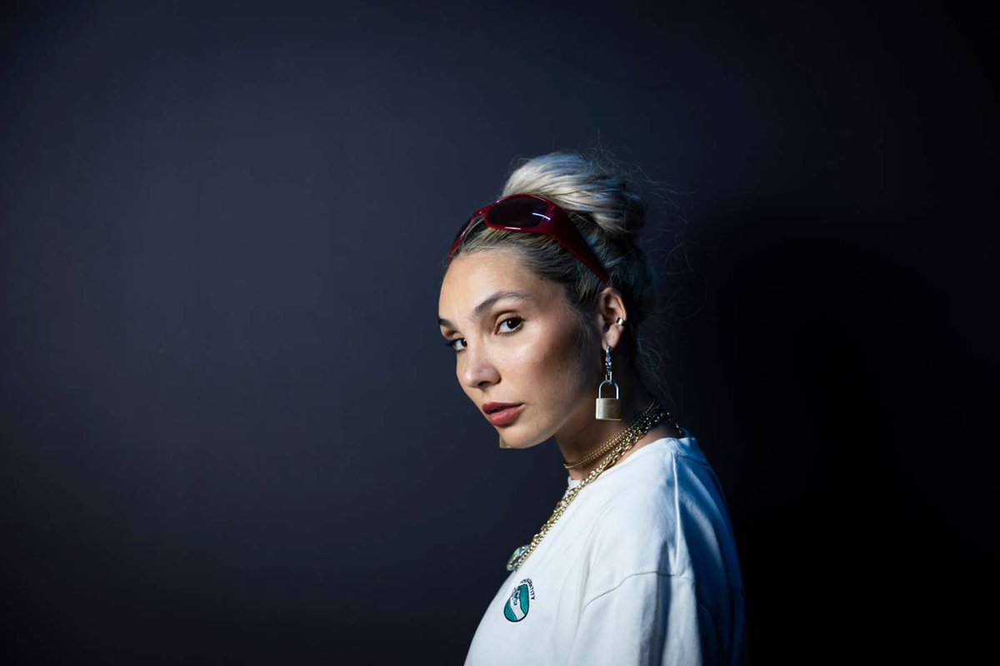

Talentos do Portugal atual 2026
Albano Jerónimo
Albano Jerónimo, nasceu em Vila Franca de Xirta, a 30 de junho de 2979, é um ator versátil com uma carreira fantástica. Estudou na Escola Superior de Teatro e Cinema do Instituto Politécnico de Lisboa e estreou-se no cinema em Antes que o Tempo Mude, de Luís Fonseca (2003), tendo trabalhado depois com José Fonseca e Costa em O Fascínio e com José Farinha em O Inimigo Sem Rosto (2006).
Televisão
De 2002 a 2003 participou em Lusitana Paixão, em 2004 na série Inspetor Max. Percorreu uma série de projetos durante estes longos anos, a destacar os últimos papéis em Ruído (2025) e na novela Vitória e Madrasta em 2026.

Claúdia Pascoal
Cláudia Pascoal, nasceu em São Pedro da Cova, Gondomar, 12 de outubro de 1993, é uma cantora e começou a tocar guitarra quando tinha 15 anos. Nos últimos anos, despontou no meio musical e televisivo nacionais através de participações em concursos musicais. É mais conhecida por ter representado Portugal no concurso Eurovisão em 2018 e pelo seu cabelo de cor rosa.
Concursos musicais
Em 2010 participou no programa Ídolos. Também concorreu à primeira edição do Factor X Portugal mas sem grande impacto e no casting para apresentador do programa Curto Circuito da SIC Radical onde ficou em 3º lugar. Em 2015 voltou a participar no programa Ídolos onde começou a dar nas vistas. Em 2017 foi concorrente no programa The Voice Portugal, embora sendo das principais favoritas a ganhar acabou a sua participação nas semifinais.
